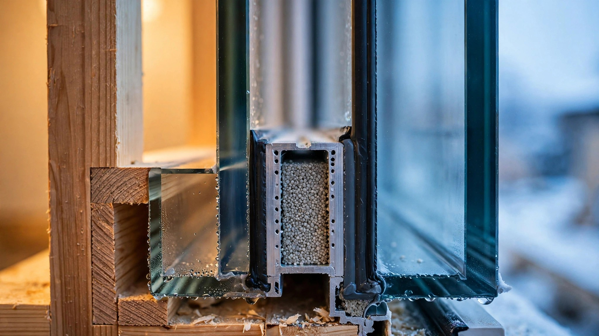

Your Premium Windows Were Tested Once in a Factory. The Argon Gas Inside Them Has Been Leaking Ever Since.

A sticker on your window says U-0.25, and that number was measured in a climate-controlled lab on the day the insulated glass unit rolled off the production line, with a full charge of argon gas sealed between the panes, under conditions your house will never replicate. NFRC certified it, the energy code accepted it, and your builder quoted it on the spec sheet you may or may not have read before signing. It has been wrong, by a slowly widening margin, every day since installation.
Argon gas leaks. Not in a catastrophic way that fogs your glass or rattles your frame, but in a quiet, molecular way that no homeowner sees, no inspector measures, and no building code requires anyone to check. Industry's own acceptable standard is less than one percent loss per year, which means a well-made window retains roughly 80 percent of its original argon fill after twenty years, and a poorly made one, with a cheap aluminum spacer and a polysulphide seal that started degrading during its first summer of UV exposure, may have lost enough gas to push its U-factor up by a third.
Researchers at the Norwegian University of Science and Technology put a number on that worst case. In a study published in MDPI Buildings in 2023 and co-released as an NREL technical report, they tested 18 insulated glass units filled with argon, split between warm-edge super spacers and standard aluminum spacers, and subjected all of them to accelerated weathering for 70 weeks while measuring gas concentration at regular intervals. Aluminum-spacer units leaked more gas under every condition tested, and complete argon loss increased the U-factor of tested IGUs by up to 32 percent, a degradation significant enough to shift a window from one ENERGY STAR performance tier to another without any visible change in the glass itself.
Twenty-Five Years of Tracking, One Number Nobody Quotes
Starting in 1980, a researcher named Lingnell began tracking 2,400 insulated glass units across 140 buildings in fourteen American cities, and what followed became the most comprehensive field study of IGU durability ever conducted in the United States, running for a full quarter century while the rest of the industry published lab studies and moved on. At ten years, 4.9 percent of IGUs had visibly failed, meaning seals had broken and fogging appeared between panes. At fifteen years, that number climbed to 7.9 percent. By year twenty-five, it reached 9.2 percent.
On the surface, those failure rates sound reassuring, because fewer than one in ten windows visibly failed after a quarter century of real-world exposure in climates ranging from Minneapolis winters to Phoenix summers. But Lingnell counted only visible failures: fogged glass, condensation between panes, obvious seal rupture you could see from across the room. An IGU that has lost 40 percent of its argon fill without fogging does not appear on that list because it looks fine, lets light through, opens and closes without complaint, and merely insulates substantially less than the day it was installed while nobody with a clipboard has ever measured the difference, or even been asked to try.
Chris Mathis, a founding board member of the National Fenestration Rating Council who consults through MC Squared in Asheville, North Carolina, put it more bluntly in an industry interview: about 30 percent of the replacement windows installed in the United States are replacing units that are only about seven years old, a figure that includes cosmetic upgrades and storm damage but speaks to something the window industry discusses at conferences and ignores in its consumer marketing materials.
How Argon Finds Its Way Out
An insulated glass unit is a sandwich of two or three lites of glass separated by a spacer frame, with the perimeter sealed by a dual system that became standard in the 1990s: a polyisobutylene primary seal providing gas retention and a secondary structural seal of polyurethane, polysulphide, or silicone holding the assembly together through decades of thermal cycling, wind loading, and the slow creep of atmospheric pressure trying to equalize with the low-conductivity gas trapped inside. Desiccant beads packed into the spacer absorb whatever moisture sneaks past the seals, and the cavity itself is filled with argon, which conducts heat 34 percent less efficiently than air and adds roughly ten cents to manufacturing cost per window, according to Randi Ernst, president of FRD Design, which sells gas-filling equipment to the window industry.
Every environmental force your window faces attacks that seal system simultaneously, and the damage compounds rather than averages over the life of the product. Temperature cycling expands and contracts the glass hundreds of times per year, flexing the seal joint in ways that fatigue polymer bonds the same way bending a paper clip back and forth eventually snaps it. UV radiation photodegrades sealant polymers, with polysulphide showing the poorest resistance to ultraviolet exposure and the lowest elastic recovery in accelerated weathering tests conducted by Wolf and Waters, whose research remains the most cited work on IGU seal permeability three decades after publication. Altitude creates permanent outward stress: an IGU assembled at sea level and installed at elevation in Denver or Albuquerque faces a pressure differential that never relaxes. And heat accelerates all of it, with researchers finding that sealant permeability increases six to eight times between 20 degrees Celsius and 60 degrees Celsius, which means your south-facing windows in Phoenix degrade in summer at a rate that would take a north-facing window in Seattle several years to match.
Secondary seal material determines lifespan more than almost any other variable a manufacturer chooses during production, because silicone sealants exhibit significantly higher life expectancy and far less temperature-dependent permeability than polysulphide, while spacer type matters nearly as much: warm-edge spacers using structural foam or composite materials instead of aluminum reduce thermal bridging at the glass edge and put less mechanical stress on the seal during thermal cycling, as Asphaug's data confirmed by showing aluminum spacers leaking more gas under every test condition. None of this information is available to a homeowner standing in a window showroom comparing NFRC stickers, and none of it is required on the label.
What Building Codes Require and What They Skip
NFRC 100 rates a window's thermal performance in laboratory conditions at the time of manufacture, and that rating appears on a label that the building code treats as permanent truth for the life of the window, whether that life turns out to be 20 years or 40 years or however long the homeowner goes without noticing that the heating bill creeps up a little more every winter. No US residential energy code requires post-installation verification of window thermal performance, not the International Energy Conservation Code, not California's Title 24, not any state-level amendment. No code requires periodic retesting, and no code requires the builder to disclose spacer type, seal material, or gas fill retention warranty separately from the overall window warranty that lumps structural integrity, hardware function, and thermal performance into one document most buyers file in a drawer.
Consider, by contrast, the only other major building envelope component with an invisible performance characteristic that wastes energy in a way homeowners cannot detect. ENERGY STAR Version 3 requires duct leakage testing at rough-in or final inspection, with specific limits tied to conditioned floor area, because duct leaks are invisible to occupants and measurable with a $500 tool that every HERS rater in the country now owns. Window gas degradation matches that description with uncomfortable precision: invisible to the occupant, measurable with existing technology, affecting energy consumption in a way that compounds silently over the life of the home, and ignored by every residential energy code in the country because nobody manufactures a handheld argon concentration meter for residential field use and the reason is not technological but regulatory, since no code demands the measurement and therefore no market exists for the tool.
An Infrared Camera That Works but Nobody Points at Houses
In 2021, Korean researchers published a method for measuring the total U-value of installed windows using infrared thermography following ISO 9869-2, and the results were striking: root mean square error of just 3.29 percent compared to laboratory measurements under the Korean standard KS F 2278, roughly 7 percent more accurate than conventional heat flow meter methods that require sensors taped to glass surfaces for hours or days, and substantially faster because a thermal scan captures the entire window surface in seconds rather than monitoring discrete points over an extended period while the homeowner wonders why there is a wire stuck to their bedroom window.
Consumer-grade FLIR thermal cameras cost $300 to $500, professional models with resolution adequate for quantitative thermography run $2,000 to $5,000, and neither price is exotic by inspection industry standards where a moisture meter costs $40 to $200, a blower door runs $3,000 to $5,000, and a thermal imaging certification course is a two-day investment most experienced inspectors have already completed for general energy auditing purposes. An IR scan of every window in a 2,500-square-foot house would take a trained inspector thirty minutes on a cold evening when the indoor-outdoor temperature differential is large enough for clean readings, which in most of the northern United States means any night between October and March.
Nobody sells this service for residential windows because no home inspection standard requires it. ASHI's Standard of Practice says inspectors shall inspect glazing, but the word "thermal" does not appear in the window section, and InterNACHI teaches members that gas fills improve energy efficiency while noting that leaks can be detected only with special gas-detection equipment that exists for manufacturers but has never been marketed to the field inspection industry, creating a circular absence where the technology exists, the measurement works, and the tool sits in a catalog nobody in residential construction opens.
Sizing a Problem Nobody Measured
Here is the original math nobody has published. Lingnell found 9.2 percent visible failure at 25 years, which represents only IGUs that ruptured badly enough to allow moisture infiltration and visible fogging between panes, the catastrophic end of the failure distribution curve. Below that threshold sits a far larger population of IGUs that have lost substantial argon without any visible symptom whatsoever, silently insulating less while passing every visual inspection a homeowner or inspector would conduct. If the industry's own one-percent-per-year standard represents ideal performance for a quality unit, then even well-made windows have lost 20 percent of their argon by year twenty, and data from Asphaug's accelerated aging study suggests measurable U-factor increases begin appearing at roughly 50 percent gas retention, reaching that 32 percent penalty at complete depletion.
Roughly 140 million housing units exist in the United States, with the vast majority containing insulated glass and the median age of owner-occupied housing sitting at 40 years. Even limiting the calculation to homes built after 1990, when argon fills became widespread in residential construction, that represents over 50 million homes with IGUs between 10 and 35 years old, each aging at a rate determined by seal quality, spacer material, orientation, altitude, and climate, variables nobody tracks after the window leaves the factory loading dock, and millions of those homes contain windows that look perfectly fine from the street while insulating measurably worse than their NFRC label promises.
Per-home energy cost is modest: Asphaug's simulation estimated 1.3 megawatt-hours of additional heating demand over twenty years for a single-family home with completely depleted gas fill, roughly $200 at national average electricity prices spread across two decades, not enough to justify window replacement on its own terms. But aggregate that across millions of homes and the waste grows significant, and the cost is not really the point because a homeowner who paid a premium for argon-filled low-E windows was promised a specific level of performance by a rating system that measured it once, on a single day, under laboratory conditions, and then walked away forever.
What Would Actually Close This Gap
A drone-mounted thermal camera flying a residential block on a January evening could identify every window deviating significantly from expected thermal performance in less than an hour, using an algorithmic layer that compares measured surface temperatures against expected values for each window's type, age, and climate zone, a machine learning problem straightforward enough that the harder challenge is assembling training data from the tens of thousands of windows that utility energy audit programs have already scanned with IR cameras but never aggregated into a performance degradation model that anyone outside a research lab can access.
For individual homeowners, a tablet app could guide a FLIR-equipped inspector through a standardized window scan protocol: input manufacturer, model, installation year, and orientation, let the app calculate expected U-value from the NFRC rating and apply a degradation curve based on age, spacer type if known, and climate zone, then compare IR-measured surface temperature differentials against that expectation to flag windows that have silently lost significant insulating capacity while looking perfectly normal to every pair of eyes that has glanced at them. Neither product exists because no code requires it, no inspector checks it, and no homeowner knows to ask for it, which is how a building component that accounts for up to half of envelope transmission losses gets rated once and monitored never.
Limitations
Several caveats constrain these conclusions and deserve honest disclosure. Asphaug's study used 18 IGUs without varying orientation or climate exposure, a small sample that the authors themselves acknowledged limits generalization to the broader housing stock. Accelerated aging techniques across the literature are not standardized, and their correlation to real-world aging rates remains an open question that decades of research have failed to close despite repeated attempts by multiple research teams. Korean IR method accuracy was validated under specific heating-dominated winter conditions, and its performance across varied American climate zones, particularly in cooling-dominated markets where temperature differentials are smaller and solar gain complicates surface temperature readings, has not been independently verified. Lingnell's field study measured visible failure only and made no attempt to quantify thermal degradation below the fogging threshold, meaning the silent degradation population remains genuinely unmeasured rather than estimated from first principles. And per-home economics may not justify routine residential testing in many markets, making the stronger case for code-mandated screening in commercial buildings and multi-family housing where aggregated window area makes the energy penalty substantial enough to justify the inspector's time and the building owner's attention.
What It Means If You Are Building or Buying
If you are buying a home with windows more than ten years old, you are buying blind on thermal performance because nobody has tested the gas fill since installation, and visual inspection tells you nothing about what is happening inside a sealed unit that was designed to be permanently closed against the atmosphere. If you are building, ask your window supplier about spacer type and secondary seal material, because warm-edge spacers with silicone secondary seals have the strongest research backing for long-term gas retention even though no manufacturer publishes a comparative gas retention curve alongside its NFRC rating, and insist on a gas fill retention warranty that is separate from the general product warranty and specifies a minimum argon concentration at a stated number of years.
If you are a building code official, consider what you already require for duct leakage and ask why windows get a pass when the underlying logic is identical: invisible energy waste, measurable with existing technology, and supported by a published degradation model that connects gas concentration loss to U-factor increases. Nobody has written the standard that connects thermal imaging to window performance verification in residential construction, and until someone does, the sticker on your window stays true for exactly one day.